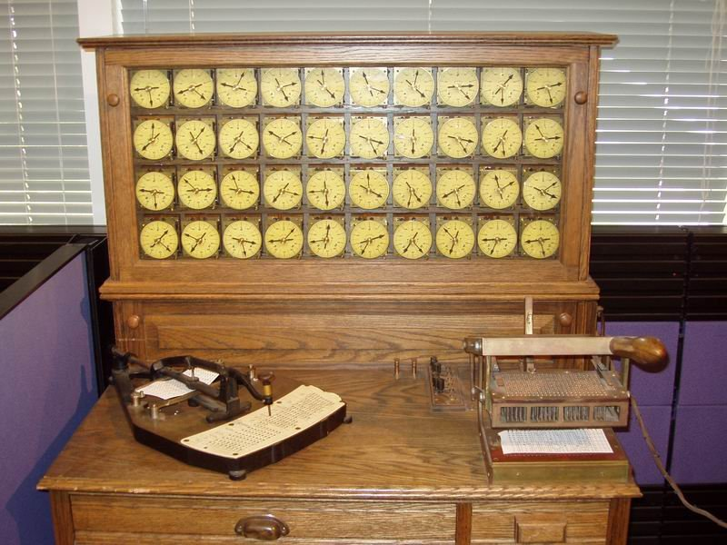

For the first 60 years computers were programed, and input and output was done using punch cards.2 Punch cards were invented for the 1890 census by Herman Hollerith, founder of the firm which was eventually to become IBM. Punch card machines operate on the same principles as modern computers but have one millionth the memory. Code reuse was impossible because one couldn't copy and paste punch cards.

IBM's first computer, used for the 1890 census. Punch cards had been around for 110 years before the world heard of “pregnant chads”.
The first programing languages which ran on devices we would recognize today as computers were known as assembly language, and were first created in the 1950s. Programmers almost had to comment explaining what each line of code did because it was inscrutable otherwise:
.TITLE HELLO WORLD
.MCALL .TTYOUT,.EXIT
HELLO:: MOV #MSG,R1 ;STARTING ADDRESS OF STRING
1$: MOVB (R1)+,R0 ;FETCH NEXT CHARACTER
BEQ DONE ;IF ZERO, EXIT LOOP
.TTYOUT ;OTHERWISE PRINT IT
BR 1$ ;REPEAT LOOP
DONE: .EXIT
MSG: .ASCIZ /HELLO, WORLD!/
.END HELLO
Code to display “Hello, World!” in DEC's PDP assembly language.
I worked with an engineer in Office named Murray Sargent who insisted that with practice, you could write in assembly language as quickly as you could write in C. However, this is someone who wrote a physics textbook, after creating a word processor to compose his textbook in, so I never took that statement very seriously. (Working at Microsoft was sometimes intimidating!)
As a college student, I took one assembly language class, which is the perfect amount for a budding computer scientist. I learned about the low-level concepts of computers: pointers, registers, the stack versus the heap, etc.
In addition to being cryptic, the biggest problem with assembly language instructions was that there were a lot of them, as each language contained details about the particular processor it was designed to run on. As a result, in order to run your software on a different computer, you were forced to alter nearly every line of code.
Therefore, one of the biggest advancements in computing was Bell Labs' creation of the programming language “C” in 1970. Compared to assembly language, code written in C is almost English:
#include <stdio.h>
int main(void)
{
printf("Hello, World!\n");
return 0;
}
“Hello, World!” in C. This is much easier to read than assembly language, but still has weird things like “#include”.
C is more comprehensible, but more importantly, by simply swapping the compiler, it enables software written in C to run on every computer in existence today with few changes required. In building the standard replacement for assembly language, Bell Labs changed computing.
Assembly language actually still exists in the nooks and crannies of modern computers: deep in the code of the operating system kernel, inside game engines, and in code to program specialized graphics or math processors. However, most processor-specific knowledge has moved out of the code a programmer writes and into the compiler, which is a huge step up.
While developers at Microsoft used assembly language in the very early years, when I joined in 1993, nearly all code was written in C or C++, and that is still true today.
Bill Gates Paul Allen
Microsoft, 1978
Bill Gates quit coding somewhere in this timeframe.
Our most important codebases — Office and OpenOffice, Internet Explorer and Firefox, SQL Server and MySQL, IIS and Apache — are written in C or C++ today.
The world spent the first 1,000 man-years of software development primarily in assembly language, but most programs are written in C or C++. Man has spent 400,000 man-years in those two languages, the same amount of time that the Egyptians spent building the Great Pyramid of Giza:
Man spent as much time programming in C and C++ as building the pyramids of Giza. Unfortunately, the software used to build our software looks as old and cracked as those pyramids do today.
Today, the free software community and Microsoft are locked in a closely fought battle: Firefox is comparable, but not dramatically better than IE. This is because neither has yet adopted a productive new programming language for such a large and important codebase. They are warring armies of patient cavemen.
In fact, what both C and C++ are missing is an innovation known as “garbage collection” (GC), or automatic memory management, an idea so subtle and clever that it would be worthy of the first Nobel Prize in Computer Science.